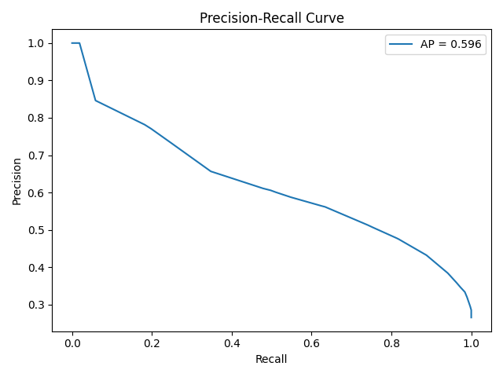
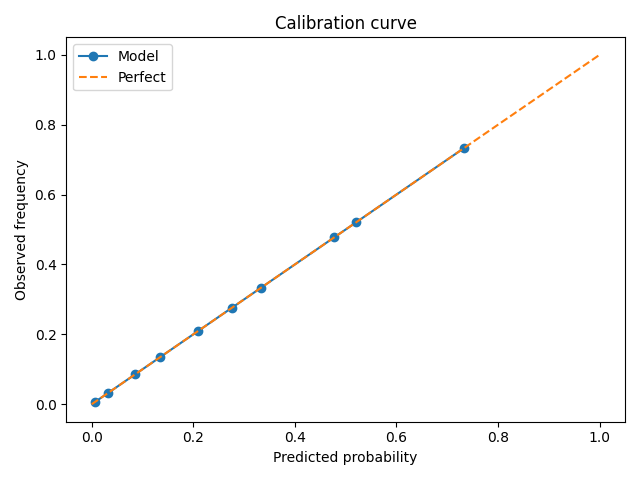
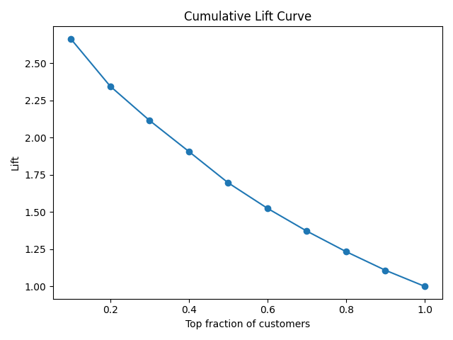
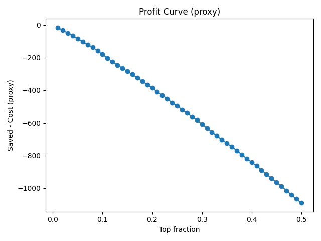

Overview
End-to-end pipeline: public Telco dataset → feature preprocessing via ColumnTransformer →
model training (LogReg / LightGBM / XGBoost) → calibration → metrics & business KPIs (Lift@k, profit) →
FastAPI for batch scoring. CI validates style/tests; scheduled run can refresh figures.
Metrics (last run)
ROC Curve
PR Curve
Calibration
Lift Curve
Profit (proxy)
API Quickstart
uvicorn src.app:app --host 0.0.0.0 --port 8000
curl -X POST http://127.0.0.1:8000/predict \
-H "Content-Type: application/json" \
-d '{"data":[{"tenure":12,"MonthlyCharges":70.5,"Contract":"Month-to-month","PaperlessBilling":"Yes","PaymentMethod":"Electronic check"}]}'
Interactive docs: /docs when API is running.